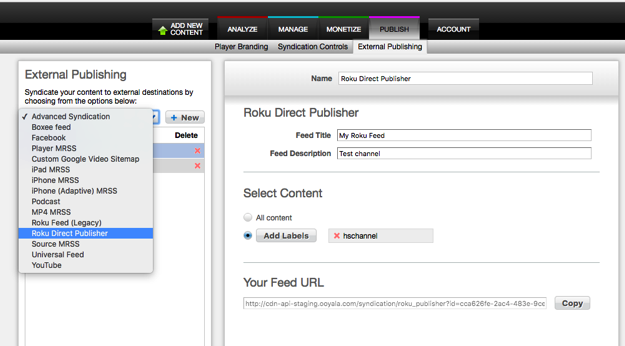

Roku Direct Publisher is
the Roku publishing platform, representing an easy way to create Roku apps or channels, as
an alternative to using the Roku SDK. For additional information, go to http://developer.roku.com or request assistance at partnersuccess@roku.com.
- Log in to the Backlot UI. The Backlot UI opens.
- Open the PUBLISH page.
- Click the External Publishing subtab.
- From the list box on the left, select publishing type Roku Direct Publisher and click New. A new syndication is created.

- Change the name and description of the syndication, if you want.
- To specify which content is syndicated, if this syndication is for all your content, click All content.
Otherwise, click Add Labels and select one or more labels.
Changes take effect immediately, and the syndication is created.
The feed can be accessed at the URL shown in Your Feed URL.
Use this Feed URL when configuring your Roku app or channel.